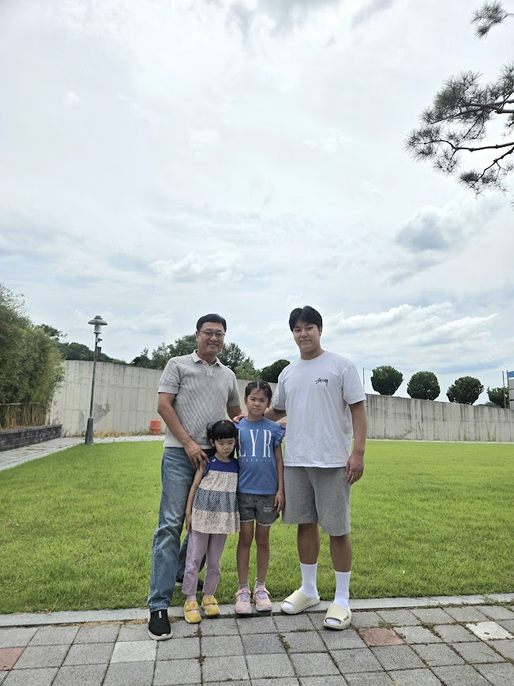
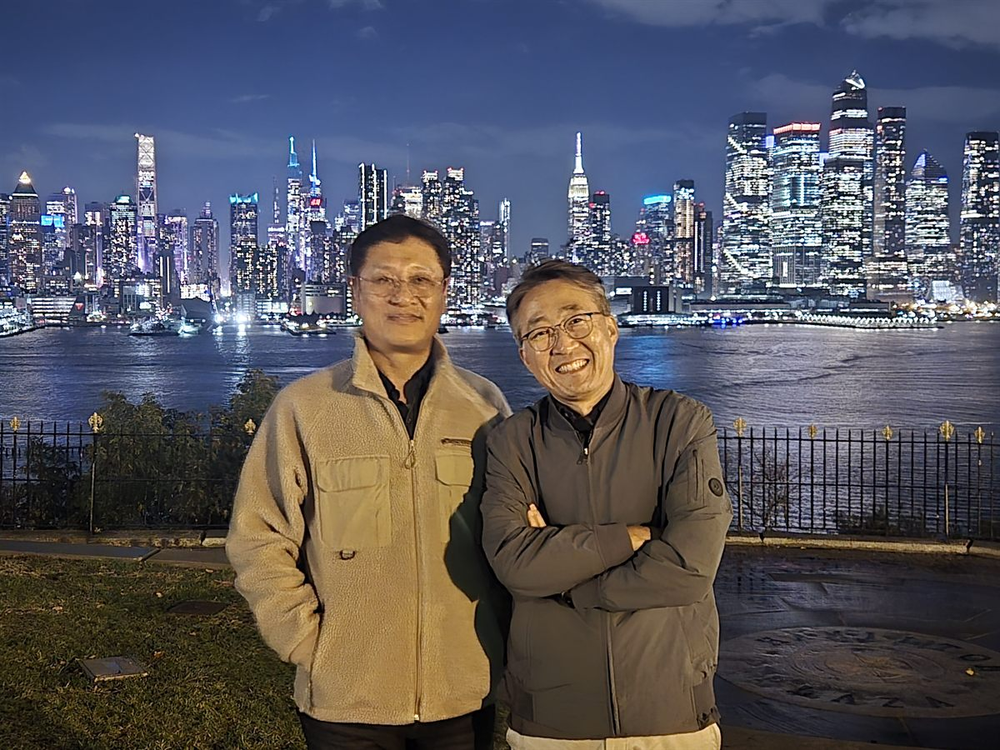

ABOUT ME
인생 2막,
일단 해보며
길을 찾는 중입니다
인생 2막을 준비하는 50대 중반의 아재입니다. AI와 함께 이것저것 새로 해보는 중이에요.
태영, 태완co*****@****.net






오늘의 속보
INTRO소개
50대가 되어 인생의 두 번째 장을 준비하고 있습니다. 무엇을 할지 정해 두기보다, 일단 해보면서 길을 찾아가는 중이에요.
AI 덕분에 예전엔 엄두도 못 냈던 일을 하나씩 해볼 수 있게 됐습니다. 이 홈페이지도 그 첫걸음이에요.
NOW요즘 하는 일
AI에게 묻고, 만들어 보고, 배워 가는 중입니다. 해본 일들은 이 페이지에 차곡차곡 쌓아 갈게요.
- AI 배우기
- 내 홈페이지 만들기
- 새로운 도전